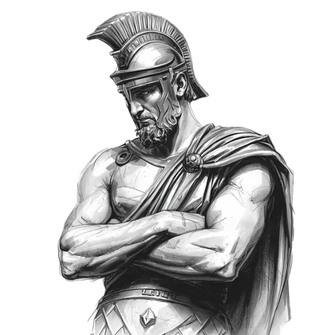
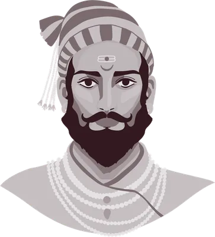
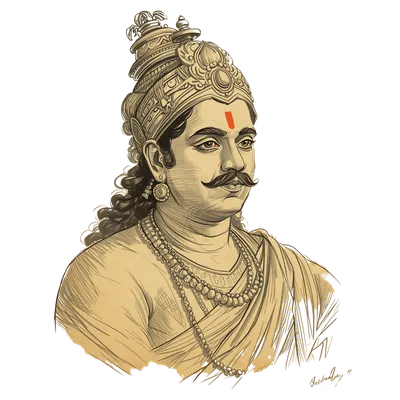
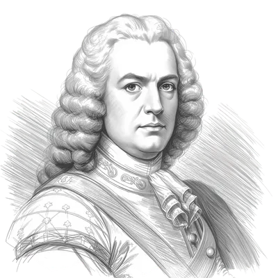
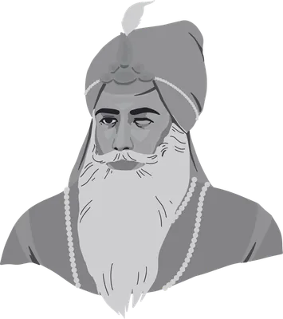
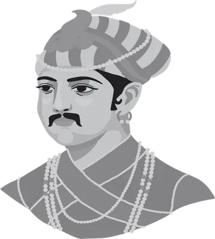
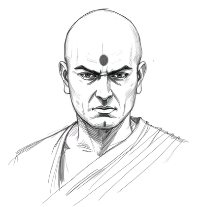
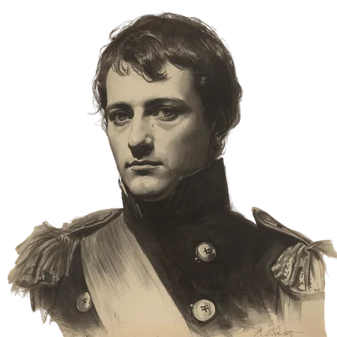

Napoleon Bonaparte is remembered as a military genius. The operational mechanism behind that genius was a staff system that processed information faster than any army in Europe before. Behind-text watermarks run at 15–22% opacity, anchored to the opening story.